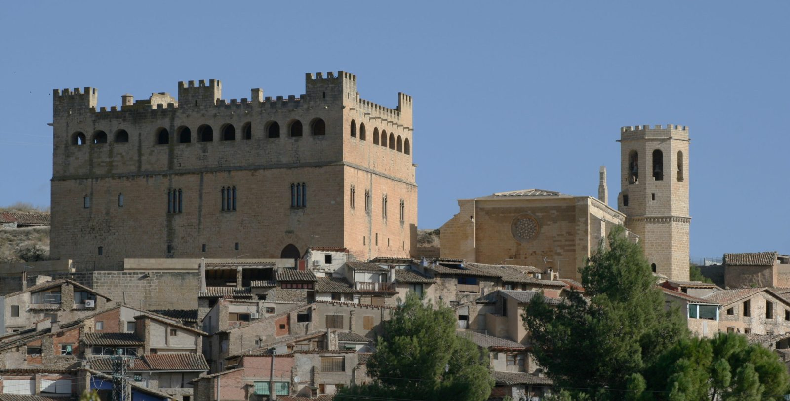
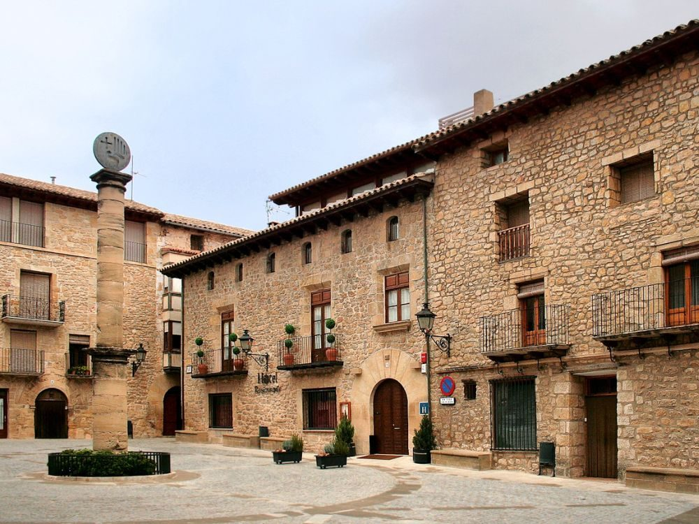
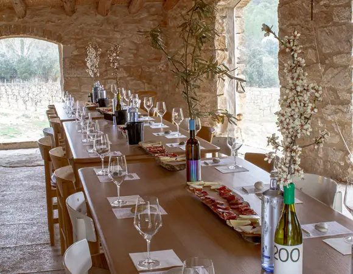
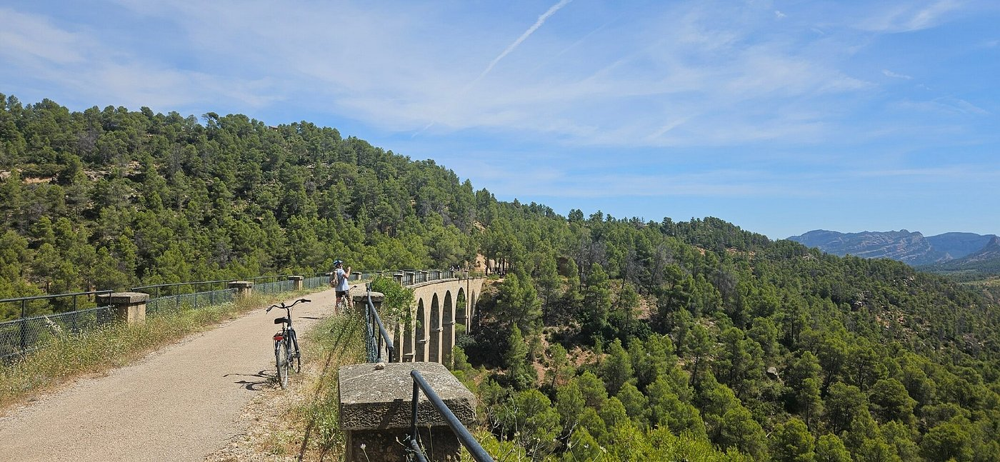
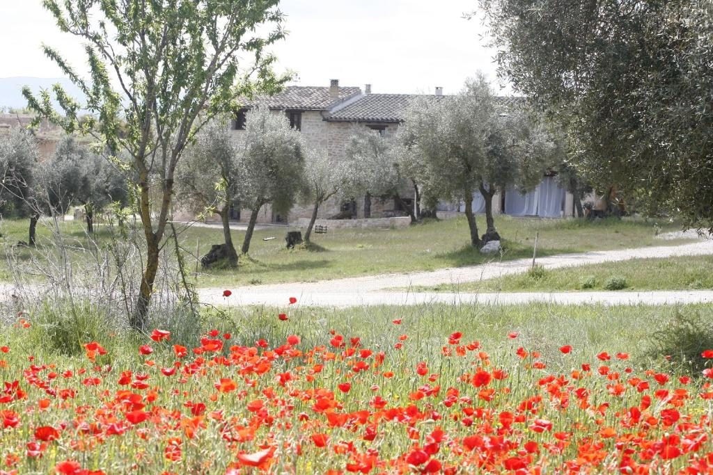
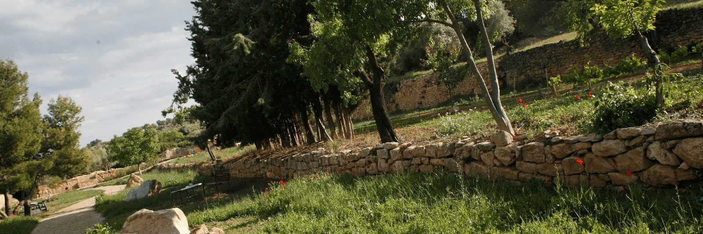

Une parenthèse ressourçante & authentique
Située dans le Bas-Aragon, la comarque du Matarraña séduit par son rythme paisible et sa nature intacte. Conçu pour de petits groupes (2 à 5 personnes), ce séjour assure convivialité, flexibilité et partage. Dégustations d'huile d'olive artisanale, de vins bio locaux et de truffe noire, balades dans le parc naturel du Parrizal de Beceite et villages classés.
Le voyage en un coup d'œil

🏰 Valderrobres
- Classé parmi les « Plus Beaux Pueblos d'Espagne »
- Pont gothique du XIVe siècle
- Château-Palais des évêques de Saragosse
- Église Santa María, gothique levantin

🏛️ Cretas
- Joyau d'architecture rurale
- Ruelles pavées en pierre dorée
- Église fortifiée du XVIe siècle
- Frontière culturelle Aragon-Catalogne

🍷 Domaine Venta d'Aubert
- Vins biologiques d'exception
- Visite des chais & terroir bio
- Parc des sculptures en plein air
- Cépages traditionnels & savoir-faire

🚴 Vía Verde à vélo
- Ancienne voie ferrée du Val de Zafán
- Piste cyclable panoramique
- Tunnels et viaducs spectaculaires
- Profil en descente, accessible à tous

🌸 Hort d'Aubert (1789)
- Demeure historique à Cretas
- Chambres thématiques raffinées
- Ambiance Provençale, Africaine, Mexicaine
- Charme & authenticité séculaire

🫒 Terroir & gastronomie
- Huile d'olive extra-vierge AOP
- Truffe noire de Teruel
- Jambon Serrano & vins locaux
- Restaurants choisis avec soin
Valderrobres, joyau du Matarraña
Pont gothique du XIVe siècle, château-palais des évêques de Saragosse et eaux turquoise du Matarraña. Classé parmi les « Plus Beaux Pueblos d'Espagne ».
Votre itinéraire jour par jour
Jour 1 · Trajet aller · Alcañiz
Départ
Route vers le Matarraña avec une halte découverte à Alcañiz, capitale du Bas-Aragon.
Alcañiz
Visite du Château des Calatravos, imposante forteresse médiévale du XIIe siècle dominant la vallée, abritant de majestueuses peintures murales gothiques. Découverte de la Plaza España, de l'Hôtel de Ville Renaissance et de la collégiale Santa María la Mayor.
Installation à Cretas
Arrivée à l'Hort d'Aubert, demeure historique de 1789 basée à Cretas. Chambres thématiques raffinées : ambiance Provençale, Africaine, Mexicaine ou Hindoue. Dîner libre dans un restaurant local.
Jour 2 · Valderrobres & Venta d'Aubert
Valderrobres
Visite de Valderrobres, classé parmi les « Plus Beaux Pueblos d'Espagne » : pont gothique du XIVe siècle franchissant les eaux turquoise du Matarraña, château-palais gothique des évêques de Saragosse, église Santa María chef-d'œuvre du gothique levantin.
Déjeuner à Valderrobres
Déjeuner dans un restaurant typique de Valderrobres.
Domaine Venta d'Aubert
Visite et dégustation au domaine viticole biologique Venta d'Aubert, niché dans la vallée de Cretas. Découverte des chais, du terroir bio et dégustation commentée des cuvées. Parc des sculptures : parcours poétique en plein air s'interrogeant sur la disparition et la reconstruction du monde.
Dîner à Cretas
Dîner au Centro Cultural de Cretas, restaurant typique de la région.
Jour 3 · Vía Verde à vélo & villages
Départ sur la Vía Verde
L'ancienne voie ferrée du Val de Zafán a été transformée en une somptueuse piste cyclable panoramique à travers tunnels et viaducs. Profil en descente, itinéraire accessible à tous les niveaux sans effort excessif. Vélos électriques (VAE) disponibles en option pour un confort absolu.
Pique-nique
Pique-nique au cœur de la nature, entre tunnels et viaducs spectaculaires.
Hort Sant Joan & Pinell del Brai
Découverte d'Hort Sant Joan, havre de paix entre oliveraies et vignes, puis visite de Pinell del Brai, village viticole authentique aux ruelles médiévales préservées. Deux perles du territoire à ne pas manquer.
Dîner convivial
Dîner à l'Hort d'Aubert : soirée auberge espagnole conviviale dans le cadre historique de la demeure.
Jour 4 · Cretas & retour
Matinée libre à Cretas
Temps libre pour explorer le village : ruelles pavées en pierre dorée, église fortifiée du XVIe siècle, place du village. Dernière flânerie dans ce joyau d'architecture rurale situé à la frontière culturelle entre l'Aragon et la Catalogne.
Déjeuner
Déjeuner dans un restaurant local avant de reprendre la route.
Route retour
Route du retour avec une dernière pause gourmande. Les images du Matarraña en tête et le goût des saveurs aragonaises sur les lèvres.
Les saveurs du Matarraña
Huile d'olive extra-vierge AOP, truffe noire de Teruel, jambon Serrano et vins locaux à chaque étape gourmande.
L'esprit du voyage
🏛️ Patrimoine
Valderrobres · Cretas · Alcañiz · Château des Calatravos · Pont gothique
🍷 Terroir & gastronomie
Venta d'Aubert · Huile d'olive AOP · Truffe noire · Vins bio · Jambon Serrano
🚴 Nature & activités
Vía Verde à vélo · Parrizal de Beceite · Oliveraies · Vignobles · Hort Sant Joan · Pinell del Brai
✨ La philosophie VPDVOYAGES
- Sélection : Des étapes qui ont du sens dans le rythme global
- Équilibre : Culture + gastronomie + nature + activités douces
- Personnalisation : Le programme évolue selon vos envies
Matarraña, avec son mélange unique de villages médiévaux, d'oliveraies séculaires et de gorges secrètes, promet une escapade authentique et ressourçante.
Votre itinéraire sur la carte
D'Alcañiz à Cretas, en passant par Valderrobres, le domaine Venta d'Aubert, Hort Sant Joan et Pinell del Brai : cliquez sur chaque point doré pour découvrir les étapes de votre escapade.
Bon séjour au Matarraña !
La Toscane Espagnole · Escapade de 4 jours · Bas-Aragon
Parlons de votre projet →